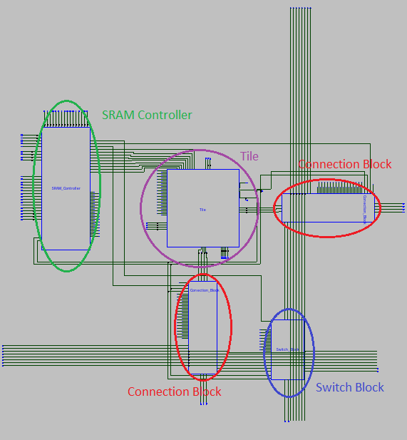
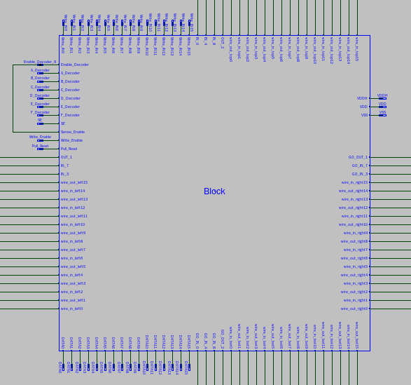
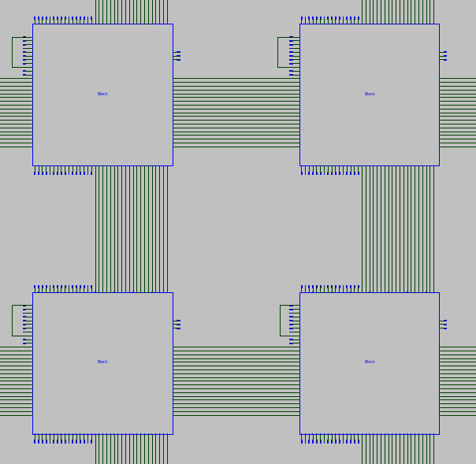
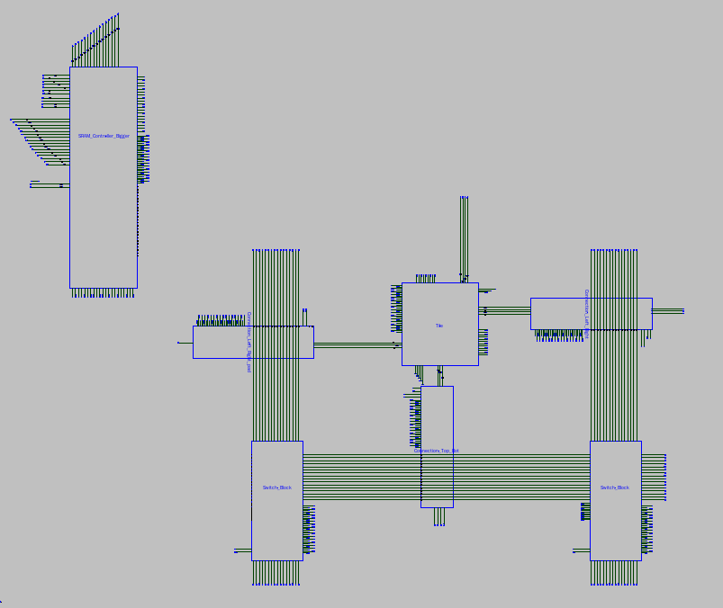

Block¶
The Block is the basic piece in the FPGA that can be multiplied to create any FPGA size that is desired, because it contains the basic structures for logic and routing
(Inner view of Block cell, Schematic taken from Sue)
By the way we have implemented, one Block has only 2 channels that were placed on the right and bottom, 2 Connection Blocks for each channel and one Switch Block for the intersection of the channels. A SRAM manager is used to program all the SRAM cells that are used by the different components inside the block
(Block view of Block cell, Schematic taken from Sue)
Each block has a “Enable_Decoder” and “Sense_Enable” port that can be enabled to do the propper operations on the Block, the Decoder address, the interconnection wires on all the sides, The Sense Amplifier enable, Pull up bit Enable, Write In bits and Datas from the Sense Amplifiers.
(Blocks connected together, Schematic taken from Sue)
It is needed to create different Tiles for the edges, so they can interconnect with the pads and take care of the extra wires.
(An left_edge Block, Schematic taken from Sue)
For the left_edge Block, it is needed to put an extra channel at the left, so the left ports of the Tile can have the same logic interconnect of the rest of the FPGA, this requires the block to have more Connections Blocks, Switch Blocks and consequently a larger SRAM manager Decoder.
As for the Bottom, Right and Bottom-Right Edge it is only needed to change the Connection Blocks, to interface the I/O pads as the desired way

In the example above, all the ports at the left side are connected into one wire, it can choose to output to any wire or receive a signal for the possible wires.